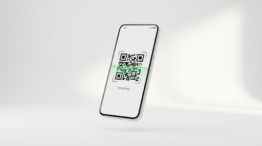

Nền Tảng Quản Lý Giáo Lý
Hiện Đại Cho Mọi Giáo Xứ
Một giải pháp mã nguồn mở mạnh mẽ, linh hoạt và bảo mật. Giúp các Huynh trưởng và Giáo xứ chuyển đổi số quy trình quản lý điểm danh, hồ sơ bí tích và kết nối phụ huynh một cách chuyên nghiệp.
Tại Sao Chọn eCCS?
Nền tảng được xây dựng dựa trên sự dấn thân và tinh thần phục vụ cộng đồng
Mã Nguồn Mở
Hoàn toàn miễn phí và minh bạch. Cộng đồng có thể đóng góp và kiểm tra mã nguồn bất cứ lúc nào.
Dễ Dàng Tùy Chỉnh
Cấu trúc module linh hoạt, cho phép bạn thay đổi giao diện và tính năng phù hợp với đặc thù giáo xứ.
Triển Khai Đa Nền Tảng
Chạy tốt trên Web, Android và iOS. Hỗ trợ Docker giúp việc deploy lên server chỉ mất vài phút.
Kiến Trúc Offline-First
Điểm danh và xử lý dữ liệu ngay cả khi không có kết nối Internet. Hệ thống tự động đồng bộ hóa thông minh khi thiết bị online trở lại, đảm bảo công việc không bao giờ bị gián đoạn.

Quản lý Giáo lý viên
Hồ sơ chi tiết, phân quyền RBAC và theo dõi quá trình phục vụ của Huynh Trưởng.
Quản lý Học sinh
Số hóa hồ sơ bí tích, thông tin phụ huynh và lịch sử học tập của từng em.
Lịch Hoạt Động
Đồng bộ lịch học, lễ bổn mạng và các sự kiện ngoại khóa của giáo xứ.
Chuyên Cần & Chấm Điểm
Hệ thống điểm danh thông minh và bảng điểm trực tuyến cho phụ huynh.
Technical Stack
Công nghệ hiện đại cho hiệu năng và bảo mật tối ưu